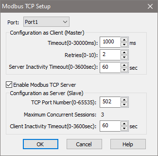

Topic: CL268

| Modbus TCP Setup |
Topic: CL268
|
The Modbus TCP Setup dialog displays current Modbus TCP settings. The PLC can act as a Client (Master) or Server (Slave), using MODBUS TCP Protocol over any available Ethernet port (Port 1 or WLAN port).
The PLC can establish connections with three Clients (Masters) and four Servers (Slaves) at the same time for each available Ethernet port (Port 1 and WLAN port).

Port: Select Port 1 or WLAN from the drop down list to populate this dialog with the port's current Modbus TCP setup.
Timeout (0-30000ms): Time the PLC will wait before Retrying. The default value is 1000ms.
Retries: Set the number of times the Port re-sends the message to the server after a response is NOT received from the server after the above Timeout setting. The default value is 2.
Server Inactivity Timeout (0-3600sec): Time the PLC will wait to hear from the server before dropping the Ethernet connection. If the connection is dropped, when the PLC receives another request it will establish a new connection. The default value is 60 sec.
Enable Modbus TCP Server: Check the box to enable the Modbus TCP Server on this port. For safety and security reason, if the server is not needed leave it disabled.
TCP Port Number (0-65535): This Com Port uses this Port Number to communicate with the clients. The default Port Number for Modbus is 502.
Maximum Concurrent Sessions: This is the Maximum number of clients that this Port can handle as server at the same time. This parameter is fixed to 3.
Client Inactivity Timeout (0-3600sec): The time that the PLC will wait to receive a message from the client before the server shuts down the connection with the client. The default value is 60 sec